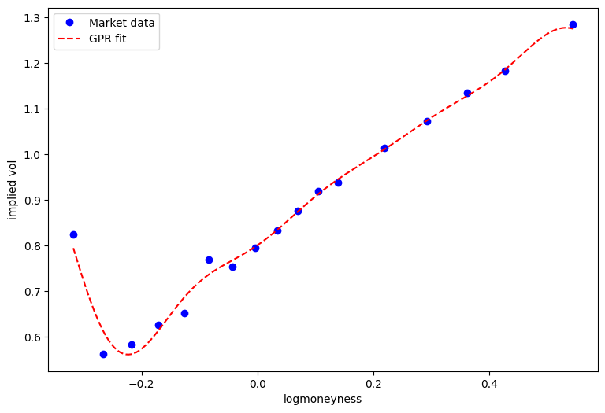

#pip install yfinanceTopics in Quantitative Finance, Summer 2025
Lecture 5: Volatility and volatility-linked derivatives
\[ \newcommand{\bea}{\begin{eqnarray}} \newcommand{\eea}{\end{eqnarray}} \newcommand{\supp}{\mathrm{supp}} \newcommand{\F}{\mathcal{F} } \newcommand{\cF}{\mathcal{F} } \newcommand{\E}{\mathbb{E} } \newcommand{\Eof}[1]{\mathbb{E}\left[ #1 \right]} \newcommand{\Etof}[1]{\mathbb{E}_t\left[ #1 \right]} \def\Cov{{ \text{Cov} }} \def\ES{{ \text{ES} }} \def\Var{{ \text{Var} }} \def\VaR{{ \text{VaR} }} \def\sd{{ \text{sd} }} \def\corr{{ \text{corr} }} \newcommand{\1}{\mathbf{1} } \newcommand{\p}{\partial} \newcommand{\PP}{\mathbb{P} } \newcommand{\Pof}[1]{\mathbb{P}\left[ #1 \right]} \newcommand{\QQ}{\mathbb{Q} } \renewcommand{\R}{\mathbb{R} } \newcommand{\DD}{\mathbb{D} } \newcommand{\HH}{\mathbb{H} } \newcommand{\spn}{\mathrm{span} } \newcommand{\cov}{\mathrm{cov} } \newcommand{\HS}{\mathcal{L}_{\mathrm{HS}} } \newcommand{\Hess}{\mathrm{Hess} } \newcommand{\trace}{\mathrm{trace} } \newcommand{\LL}{\mathcal{L} } \newcommand{\s}{\mathcal{S} } \newcommand{\ee}{\mathcal{E} } \newcommand{\ff}{\mathcal{F} } \newcommand{\hh}{\mathcal{H} } \newcommand{\bb}{\mathcal{B} } \newcommand{\dd}{\mathcal{D} } \newcommand{\g}{\mathcal{G} } \newcommand{\half}{\frac{1}{2} } \newcommand{\T}{\mathcal{T} } \newcommand{\bit}{\begin{itemize}} \newcommand{\eit}{\end{itemize}} \newcommand{\beq}{\begin{equation}} \newcommand{\eeq}{\end{equation}} \newcommand{\tr}{\text{tr}} \renewcommand{\angl}[1]{\langle #1 \rangle} \]
Agenda
- Volatility and its various estimators
- Historical volatility
- Implied volatility
- Realized variance
- VIX
- Implied volatility
- Estimating discount factor and dividend rates by put-call parity
- GPR fit of implied volatilities
- Volatility indices published by CBOE
- Volatility linked derivatives
- VIX option
- Appendix (Optional)
- Realized variance from high frequency data
- The Corsi HAR-RV forecast
What is volatility?
From the Wikipage:
In finance, volatility (symbol \(\sigma\)) is the degree of variation of a trading price series over time as measured by the standard deviation of logarithmic returns.
- Historic volatility measures a time series of past market prices.
- Implied volatility looks forward in time, being derived from the market price of a market-traded derivative (in particular, an option).
- Realized variance estimates the integrated variance or quadratic variation by using high frequency data.
Why is volatility important?
From the same Wikipage:
Investors care about volatility for at least the following reasons:
The wider the swings in an investment’s price, the harder emotionally it is to not worry;
Price volatility of a trading instrument can define position sizing in a portfolio;
When certain cash flows from selling a security are needed at a specific future date, higher volatility means a greater chance of a shortfall;
Higher volatility of returns while saving for retirement results in a wider distribution of possible final portfolio values;
Higher volatility of return when retired gives withdrawals a larger permanent impact on the portfolio’s value;
Price volatility presents opportunities to buy assets cheaply and sell when overpriced;
Portfolio volatility has a negative impact on the compound annual growth rate (CAGR) of that portfolio
Volatility affects pricing of options, being a parameter of the Black–Scholes model.
In today’s markets, it is also possible to trade volatility directly, through the use of derivative securities such as options and variance swaps.
Volatilities
Volatiltiy of a financial asset in its most prelimanry form is defined as the (conditional) standard deviation of its log return. In practice, there exist various notions of “volatility” that are commonly used including
- Historical volatility
- Realized and integrated variance/volatility
- Implied volatility
- Instantaneous volatility
and methods of inferring these volatilities respectively from
- Daily or high-frequency time series data of the underlying
- Price series of variance swap
- Prices of liquidly traded vanilla options
Historical volatility
Historical volatility uses, say daily, price series to calculate the sample conditional standard deviation of log returns in rolling time windows of a prespecified width.
Example of historical volatility
Now let’s calculate the volatility of S&P500 using 25-day rolling time windows.
One can calculate the volatiltiy series of the input price series \(S_t\), \(1 \leq t \leq T\), by the following formula
\[ \sigma_t = \sqrt{\frac N{n-2}\sum_{i=1}^{n-1} (r_i - \bar r)^2}, \quad \text{ for } n \leq t \leq T, \]
where
\[\begin{aligned} r_i &= \ln S_{t + i} - \ln S_{t + i - 1}, \quad \text{for } 1 \leq i \leq n - 1, \\ \bar{r} &= \frac{1}{n-1} \sum_{i=1}^{n-1} r_i. \end{aligned}\]Note
- \(n\) denotes the width (number of days) of rolling window
- \(N\) denotes the number of days in a year, thus \(\sqrt N\) is the annualizing factor
- The first \(n-1\) points in the output volatility series appear as NA, for an obvious reason.
Exponetially weighted moving average (EWMA)
An alternative to calculate historical volatility is the exponentially weighted moving average method.
\[ \sigma_t = \sqrt{N(1 - \lambda)\sum_{i=1}^{\infty} \lambda^i (r_{t - i} - \bar r)^2}, \quad \text{ for } n \leq t \leq T, \]
for some \(\lambda \in (0, 1)\).
Now let’s dirty our hands …
import yfinance as yfimport numpy as np
from numpy import exp, log, sqrt
import scipy.stats as ss
from scipy.stats import norm
import pandas as pd
import yfinance as yf
import matplotlib.pyplot as plt
import statsmodels.formula.api as smTips: You may skip the next 5 cells if you encounter an error.
import os
proxy = 'http://127.0.0.1:7890'
os.environ['HTTP_PROXY'] = proxy
os.environ['HTTPS_PROXY'] = proxystart, end = '2019-01-01', '2024-07-24'
# download SPX from yahoo finance
spx = yf.Ticker("^GSPC").history(start=start, end=end)# brief look at the data
spx.info(), spx.isna().sum()# first and last few rows of the data
spx# save data, just in case
# spx.to_csv('spx_07252022.csv')You may start from here.
# load saved data
spx = pd.read_csv('spx_07252022.csv')
spx.index = spx['Date']
spx = spx.drop('Date', axis=1)# summary statistics
spx.describe().transpose()| count | mean | std | min | 25% | 50% | 75% | max | |
|---|---|---|---|---|---|---|---|---|
| Open | 895.0 | 3.586641e+03 | 6.613510e+02 | 2290.709961 | 2.980045e+03 | 3.439380e+03 | 4.213645e+03 | 4.804510e+03 |
| High | 895.0 | 3.608340e+03 | 6.637349e+02 | 2300.729980 | 2.991620e+03 | 3.464860e+03 | 4.239375e+03 | 4.818620e+03 |
| Low | 895.0 | 3.562902e+03 | 6.583530e+02 | 2191.860107 | 2.963575e+03 | 3.419930e+03 | 4.192340e+03 | 4.780040e+03 |
| Close | 895.0 | 3.587314e+03 | 6.608265e+02 | 2237.399902 | 2.978570e+03 | 3.443120e+03 | 4.209795e+03 | 4.796560e+03 |
| Adj Close | 895.0 | 3.587314e+03 | 6.608265e+02 | 2237.399902 | 2.978570e+03 | 3.443120e+03 | 4.209795e+03 | 4.796560e+03 |
| Volume | 895.0 | 4.069480e+09 | 1.168092e+09 | 0.000000 | 3.337885e+09 | 3.778890e+09 | 4.548675e+09 | 9.878040e+09 |
# plot spx adjusted close
plt.figure(figsize=(9, 6))
spx['Close'].plot()
plt.ylabel('SPX', fontsize=12)
plt.grid();
# log return of spx
r = log(spx['Close']).diff()
# historical volatility in this period
vol = r.std()*sqrt(252)
r, r.mean(), vol, type(r)(Date
2019-01-02 NaN
2019-01-03 -0.025068
2019-01-04 0.033759
2019-01-07 0.006986
2019-01-08 0.009649
...
2022-07-15 0.019019
2022-07-18 -0.008399
2022-07-19 0.027254
2022-07-20 0.005878
2022-07-21 0.009813
Name: Close, Length: 895, dtype: float64,
0.0005209587220526575,
0.22945020327258875,
pandas.core.series.Series)# plot log return
plt.figure(figsize=(9, 6))
r.plot(lw=1)
plt.ylabel('SPX log return', fontsize=12)
plt.grid();r.iloc[0:10], r.iloc[-10:](Date
2019-01-02 NaN
2019-01-03 -0.025068
2019-01-04 0.033759
2019-01-07 0.006986
2019-01-08 0.009649
2019-01-09 0.004090
2019-01-10 0.004508
2019-01-11 -0.000146
2019-01-14 -0.005271
2019-01-15 0.010665
Name: Close, dtype: float64,
Date
2022-07-08 -0.000831
2022-07-11 -0.011594
2022-07-12 -0.009287
2022-07-13 -0.004467
2022-07-14 -0.003003
2022-07-15 0.019019
2022-07-18 -0.008399
2022-07-19 0.027254
2022-07-20 0.005878
2022-07-21 0.009813
Name: Close, dtype: float64)# n: rwidth of rolling window
# N: annualizing factor
def volatility(data, n=10, N=252):
data = pd.Series(data)
vol = [np.nan for i in range(n)]
for i in range(len(data)-n):
vol += [data.iloc[i:(i+n)].std()*sqrt(N)]
return pd.DataFrame({'volatility': vol})volatility(r)| volatility | |
|---|---|
| 0 | NaN |
| 1 | NaN |
| 2 | NaN |
| 3 | NaN |
| 4 | NaN |
| ... | ... |
| 890 | 0.136786 |
| 891 | 0.160218 |
| 892 | 0.160347 |
| 893 | 0.210679 |
| 894 | 0.211261 |
895 rows × 1 columns
spx_vol = volatility(r)
spx_vol.index = r.index
plt.figure(figsize=(9, 6))
plt.plot(spx_vol)
plt.ylabel('Volatility', fontsize=12)
plt.title('SPX historical volatility', fontsize=24)
plt.grid();# leverage effect
spx_scaled = (spx - spx.mean())/(spx.max() - spx.min())
plt.figure(figsize=(9, 6))
spx_scaled['Close'].plot(color='k', lw=1, label='scaled spx')
plt.ylim([-0.6, 1])
plt.plot(spx_vol, 'b-.', lw=1, label='volatility')
plt.grid()
plt.title('Leverage effect', fontsize=24)
plt.legend();Volatility estimation using OHLC
- Parkison
- Garman-Klass
- Rogers-Satchell
- Yang-Zhang
- \(u_i = \ln H_i - \ln O_i\): daily high weighted by open,
- \(d_i = \ln L_i - \ln O_i\): daily low weighted by open
- \(o_i = \ln O_i - \ln C_{i-1}\)
- \(c_i = \ln C_i - \ln O_i\)
We make the calculation of these volatilties into a python class.
class Volatilities:
def __init__(self, OHLC, n=10, N=252):
self.n = n
self.N = N
self.OHLC = pd.DataFrame(OHLC)
self.o = self.OHLC.Open
self.h = self.OHLC.High
self.l = self.OHLC.Low
self.c = self.OHLC.Close
self.r = log(self.OHLC['Close']).diff()
self.vols_c = [np.nan for i in range(self.n)]
self.vols_p = [np.nan for i in range(self.n)]
self.vols_gk = [np.nan for i in range(self.n)]
self.vols_rs = [np.nan for i in range(self.n)]
for i in range(len(self.r) - self.n):
self.vols_c += [self.r.iloc[i:(i+self.n)].std()*sqrt(self.N)]
self.vols_p += [self.cal_vol_p(self.h.iloc[i:(i+self.n)], self.l.iloc[i:(i+self.n)])*sqrt(self.N)]
self.vols_gk += [self.cal_vol_gk(self.o.iloc[i:(i+self.n)], self.h.iloc[i:(i+self.n)], self.l.iloc[i:(i+self.n)], self.c.iloc[i:(i+self.n)])*sqrt(self.N)]
self.vols_rs += [self.cal_vol_rs(self.o.iloc[i:(i+self.n)], self.h.iloc[i:(i+self.n)], self.l.iloc[i:(i+self.n)], self.c.iloc[i:(i+self.n)])*sqrt(self.N)]
self.vols = pd.DataFrame({'close': self.vols_c, 'parkinson': self.vols_p, 'garman-klass': self.vols_gk, 'rogers-satchell': self.vols_rs})
self.vols.index = self.OHLC.index
def cal_vol_p(self, H, L):
return np.sqrt(((log(H) - log(L))**2).mean()/log(2)/4)
def cal_vol_gk(self, O, H, L, C):
term1 = ((log(O) - log(L))**2).mean()/2
term2 = (2*log(2) - 1)*((log(C) - log(O))**2).mean()
return np.sqrt(term1 + term2)
def cal_vol_rs(self, O, H, L, C):
u, d, c = log(H) - log(O), log(L) - log(O), log(C) - log(O)
return np.sqrt((u*(u-c)).mean() + (d*(d-c)).mean())%%time
spx_vols = Volatilities(spx)CPU times: total: 1.53 s
Wall time: 1.59 sspx_vols.vols['garman-klass']Date
2019-01-02 NaN
2019-01-03 NaN
2019-01-04 NaN
2019-01-07 NaN
2019-01-08 NaN
...
2022-07-15 0.128716
2022-07-18 0.126178
2022-07-19 0.138915
2022-07-20 0.140416
2022-07-21 0.140299
Name: garman-klass, Length: 895, dtype: float64plt.figure(figsize=(10, 6))
spx_vols.vols['close'].plot(ls='--', label='Close', lw=0.8)
spx_vols.vols['parkinson'].plot(lw=0.8, label='Parkinson')
spx_vols.vols['garman-klass'].plot(lw=0.8, label='Garman-Klass')
spx_vols.vols['rogers-satchell'].plot(lw=0.8, label='Rogers-Satchell')
plt.legend()
plt.grid();
spx.tail(1)| Open | High | Low | Close | Adj Close | Volume | |
|---|---|---|---|---|---|---|
| Date | ||||||
| 2022-07-21 | 3955.469971 | 3999.290039 | 3927.639893 | 3998.949951 | 3998.949951 | 3586030000 |
Implied volatility
“A wrong number to a wrong formula for a correct answer.”
In the Black-Scholes model there is a one-to-one relation between the price of the option and the volatility parameter \(\sigma\). The option prices are often quoted by stating this specific volatility, called the implied volatility.
In Black-Scholes world, the volatility is assumed constant. But in reality, options of different strike require different volatilities to match their market prices. This is called the volatility smile.
Most of the work was inspired in modeling the implied volatility.
Why implied volatility rather than the price itself?
- Price of a call option is decreasing in strike and increasing in time to expiry
- Price of a far out-of-money option is small whereas price of a far in-the-money option carries mostly the intrinsic value
- Statistically speaking, implied volatility is a more standard quantity to infer
- Traders trade options in terms of implied volatilities rather than their prices
A practical tip for fetching risk free and dividend rates
Q: How to obtain the interest rate \(r\) and dividend rate \(d\) for the calculation of implied volatility?
A: Put-call parity.
Recall the Put-Call Parity for European options
\[ C - P = Se^{-dT} - K e^{-rT} = e^{-rT} (F - K), \]
where \(F\) denotes the forward price of the underlying. Hence, if we regress \(C - P\) against \(K\), the (negative) slope gives us the discount factor and the intercept gives the ex-dividend underlying.
Example - Implied volatilities of options on SPX
# import required modules
import datetime
from datetime import datetime as dt
import numpy as np
from numpy import exp, log, sqrt
import scipy.stats as ss
from scipy.stats import norm
import pandas as pd
import yfinance as yf
import matplotlib.pyplot as plt
import statsmodels.formula.api as smTips: You may skip the next 12 cells if you encounter an error.
# download spx options data from yahoo finance
spx = yf.Ticker('^SPX')
spx_expiries = spx.options
print(spx_expiries)# choose an expiry
idx = 17
today = dt.strftime(dt.now(), '%Y-%m-%d')
day_count = (dt.strptime(spx_expiries[idx], '%Y-%m-%d') - dt.now()).days
print(f'option expiry = {spx_expiries[idx]}, today = {today}')
print(f'There are {day_count} days to expiry')
option_chain = spx.option_chain(spx_expiries[idx])
spx_calls = option_chain.calls
spx_puts = option_chain.putsspx_calls.shape, spx_puts.shapespx_calls.info()spx_calls.isna().sum()spx_puts.isna().sum()spx_calls# clean up data
# remove NA's
spx_calls = spx_calls.drop(['currency', 'contractSize'], axis=1).dropna()
spx_puts = spx_puts.drop(['currency', 'contractSize'], axis=1).dropna()
spx_calls.shape, spx_puts.shapespx_calls[spx_calls['lastTradeDate'] > '2024-07']# remove data point where either bid = 0 or ask = 0
# remove data that that are not traded recently
spx_calls = spx_calls[(spx_calls['bid'] > 0) & (spx_calls['ask'] > 0)]
#spx_calls[spx_calls['lastTradeDate'] > '2022-07']
spx_callsspx_puts = spx_puts[(spx_puts['bid'] > 0) & (spx_puts['ask'] > 0)]
#spx_puts = spx_puts[spx_puts['lastTradeDate'] > '2022-02']
spx_puts# save data as csv
#spx_calls.to_csv('spxcall_07252022.csv', index=False)
#spx_puts.to_csv('spxput_07252022.csv', index=False)You may start from here
# read saved spx option data
spx_calls = pd.read_csv('spxcall_07252022.csv')
spx_puts = pd.read_csv('spxput_07252022.csv')Create python class OptionAnalytics
Wrap everything up in a python class.
class OptionAnalytics:
def __init__(self, option_chain, expiry, today):
self.expiry = expiry
self.today = today
if not type(today) == datetime.datetime:
self.today = dt.strptime(today, '%Y-%m-%d')
self.calls, self.puts = option_chain
self.ks_c = self.calls['strike']
self.cs = (self.calls['bid'] + self.calls['ask'])/2
self.ks_p = self.puts['strike']
self.ps = (self.puts['bid'] + self.puts['ask'])/2
# strikes that are traded for both calls and puts
self.ks = np.array([])
for k in self.ks_c:
if k in np.array(self.ks_p):
self.ks = np.concatenate([self.ks, [k]])
self.mids_call = np.array([])
for k in self.ks:
self.calls[self.calls['strike'] == k]['bid']
bid = self.calls[self.calls['strike'] == k]['bid']
ask = self.calls[self.calls['strike'] == k]['ask']
self.mids_call = np.concatenate([self.mids_call, np.array((bid + ask)/2)])
self.mids_put = np.array([])
for k in self.ks:
bid = self.puts[self.puts['strike'] == k]['bid']
ask = self.puts[self.puts['strike'] == k]['ask']
self.mids_put = np.concatenate([self.mids_put, np.array((bid + ask)/2)])
tmp = self.imp_vols()
self.ivs, self.s_adj = tmp['imp_vols'], tmp['s_adj']
# put-call parity plot
def plot_parity(self):
plt.figure(figsize=(9, 5))
plt.plot(self.ks, self.mids_call - self.mids_put, 'r.--')
plt.ylabel(r'$C - P$', fontsize=12)
plt.xlabel(r'$K$', fontsize=12)
plt.title(f'Expiry: {self.expiry}', fontsize=15);
return None
def plot_arb(self):
# monotonicity and convexity for option premia vs strikes
fig, axes = plt.subplots(1, 2, figsize=(12, 5), sharey=True)
axes[0].plot(self.ks_c, self.cs, 'bo--')
axes[0].set_ylabel('Option mid price', fontsize=12)
axes[0].set_xlabel('Strike', fontsize=12)
axes[1].plot(self.ks_p, self.ps, 'ro--')
axes[1].set_xlabel('Strike', fontsize=12);
return None
# plot implied vol
def plot_imp_vols1(self):
ivs_c = self.calls['impliedVolatility']
ivs_p = self.puts['impliedVolatility']
# plot
plt.figure(figsize=(10, 6))
plt.plot(self.ks_p, ivs_p, 'ro--', label='implied vol from puts')
plt.plot(self.ks_c, ivs_c, 'bo--', label='implied vol from calls')
plt.title(f'Expiration date: {self.expiry}', fontsize=15)
plt.xlabel('Strikes', fontsize=12)
plt.ylabel('Impliied Volatilities', fontsize=12)
plt.legend();
return None
# Black-Scholes formula for call
def bs_call(self, s, K, t, sigma, r=0):
d1 = (log(s/K) + r*t)/(sigma*sqrt(t)) + sigma*sqrt(t)/2
d2 = d1 - sigma*sqrt(t)
return s*norm.cdf(d1) - K*exp(-r*t)*norm.cdf(d2)
# function calculating implied vol by the bisection method
def bs_impvol_call(self, s0, K, T, C, r=0):
K = np.array([K])
n = len(K)
sigmaL, sigmaH = 1e-10*np.ones(n), 10*np.ones(n)
CL, CH = self.bs_call(s0, K, T, sigmaL, r), self.bs_call(s0, K, T, sigmaH, r)
while np.mean(sigmaH - sigmaL) > 1e-10:
sigma = (sigmaL + sigmaH)/2
CM = self.bs_call(s0, K, T, sigma, r)
CL = CL + (CM < C)*(CM - CL)
sigmaL = sigmaL + (CM < C)*(sigma - sigmaL)
CH = CH + (CM >= C)*(CM - CH)
sigmaH = sigmaH + (CM >= C)*(sigma - sigmaH)
return sigma[0]
# calculate implied vols
def imp_vols(self):
# regress call - put over strike K
# apply put-call parity
df = {'CP': self.mids_call - self.mids_put, 'Strike': self.ks}
result = sm.ols(formula='CP ~ Strike', data=df).fit()
s_adj, pv = result.params[0], -result.params[1]
ks_pv = self.ks*pv
days_to_expiry = (dt.strptime(self.expiry, '%Y-%m-%d') - self.today).days
imp_vols = self.bs_impvol_call(s_adj, ks_pv, days_to_expiry/365, self.mids_call, r=0)
return {'imp_vols': imp_vols, 'pv': pv, 's_adj': s_adj}
# plot implied vol
def plot_imp_vols2(self):
plt.figure(figsize=(10, 6))
y = self.ivs[self.ivs>0.001]
x = self.ks[self.ivs>0.001]
plt.plot(log(x/self.s_adj), y, 'b.--')
plt.plot(log(x/self.s_adj), y, 'r.')
plt.xlabel('logmoneyness', fontsize=12)
plt.ylabel('implied volatilities', fontsize=12)
plt.title('Implied volatilities vs Logmoneyness', fontsize=15);
return None
def __call__(self):
passexpiry = '2022-08-26'
today = '2022-07-25'
# today = dt.now()
spx_opt = OptionAnalytics([spx_calls, spx_puts], expiry, today)
#spx_opt = OptionAnalytics([spx_calls, spx_puts], spx_expiries[idx])C:\Users\Lenovo\AppData\Local\Temp\ipykernel_25000\903028481.py:94: FutureWarning: Series.__getitem__ treating keys as positions is deprecated. In a future version, integer keys will always be treated as labels (consistent with DataFrame behavior). To access a value by position, use `ser.iloc[pos]`
s_adj, pv = result.params[0], -result.params[1]spx_opt.plot_arb()spx_opt.plot_parity()
spx_opt.s_adj3956.9116921934447spx_opt.imp_vols()C:\Users\Lenovo\AppData\Local\Temp\ipykernel_25000\903028481.py:94: FutureWarning: Series.__getitem__ treating keys as positions is deprecated. In a future version, integer keys will always be treated as labels (consistent with DataFrame behavior). To access a value by position, use `ser.iloc[pos]`
s_adj, pv = result.params[0], -result.params[1]{'imp_vols': array([0.30600045, 0.30595555, 0.2977905 , 0.29545201, 0.28072122,
0.28232929, 0.2760224 , 0.27571335, 0.26859412, 0.26908309,
0.27284159, 0.2708769 , 0.26853801, 0.26566743, 0.26527454,
0.26282943, 0.26242285, 0.2594965 , 0.25959885, 0.25941643,
0.25750019, 0.25653246, 0.25254566, 0.25387708, 0.25385611,
0.2507587 , 0.25183417, 0.24960497, 0.24816526, 0.24549749,
0.2473746 , 0.24511455, 0.24306506, 0.24344569, 0.24239335,
0.2381772 , 0.23923107, 0.23911993, 0.23822523, 0.23924822,
0.23345209, 0.23237829, 0.2344444 , 0.23344536, 0.22909791,
0.22899399, 0.23093383, 0.23010241, 0.22853441, 0.22734051,
0.22629503, 0.22473931, 0.22267772, 0.22467133, 0.22094489,
0.22158022, 0.22029972, 0.21894173, 0.22040126, 0.21866736,
0.21803138, 0.21752707, 0.21522827, 0.21498524, 0.21433691,
0.21338911, 0.21299896, 0.20983357, 0.21131474, 0.20839273,
0.20862321, 0.20877018, 0.20719259, 0.20584517, 0.20362794,
0.20224901, 0.20071144, 0.20063567, 0.19902292, 0.19711411,
0.19699863, 0.19436676, 0.1925327 , 0.18606077, 0.18129871,
0.1965902 , 0.22174679]),
'pv': 0.9978522732469026,
's_adj': 3956.9116921934447}spx_opt.plot_imp_vols2(), spx_opt.plot_imp_vols1();A shorter time to expiry option on SPX
Tips: You may skip this part if you encounter an error.
# choose an expiry
idx = 5
today = dt.strftime(dt.now(), '%Y-%m-%d')
day_count = (dt.strptime(spx_expiries[idx], '%Y-%m-%d') - dt.now()).days
print(f'option expiry = {spx_expiries[idx]}, today = {today}')
print(f'There are {day_count} days to expiry')
option_chain = spx.option_chain(spx_expiries[idx])
spx_calls1 = option_chain.calls
spx_puts1 = option_chain.puts# clean data
spx_calls1 = spx_calls1.dropna()
spx_calls1 = spx_calls1[(spx_calls1['bid'] > 0) & (spx_calls1['ask'] > 0)]
spx_puts1 = spx_puts1.dropna()
spx_puts1 = spx_puts1[(spx_puts1['bid'] > 0) & (spx_puts1['ask'] > 0)]today = dt.now()
spx_opt1 = OptionAnalytics([spx_calls1, spx_puts1], spx_expiries[idx], today)spx_opt1.plot_arb()spx_opt1.plot_parity()spx_opt.imp_vols()['pv']spx_opt1.s_adj, spx_opt1.imp_vols()['pv']spx_opt1.plot_imp_vols2(), spx_opt1.plot_imp_vols1();You may start from here.
GPR fit for SPX implied volatility curve
# The posterior mean function from GPR
# inputs:
# m: prior mean function
# k: prior kernel
# y: observations
# x: indices
#
# output: the posterior mean function
def pos_mean(m, k, y, x, sigma=0.001):
n = len(x)
# calculate the covariance matrices
tmp, _ = np.meshgrid(x, x)
Sigma_YY = k(tmp, _)
Sigma_YY = Sigma_YY + sigma**2*np.identity(n)
# determine Sigma_YY_inv(Y - EY) by solving the linear system Sigma_YY x = Y - EY
Sigma_YY_inv_Y_EY = np.linalg.solve(Sigma_YY, y - m(x))
# return the posterior mean function
return lambda xx: m(xx) + sum(k(xx, x)*Sigma_YY_inv_Y_EY)
# The posterior kernel from GPR
# inputs:
# k: prior kernel
# x: indices
#
# output: the posterior kernel
def pos_kernel(k, x, sigma=0.1):
n = len(x)
# calculate the covariance matrices
tmp, _ = np.meshgrid(x, x)
Sigma_YY = k(tmp, _)
Sigma_YY = Sigma_YY + sigma**2*np.identity(n)
# return the posterior kernel
def _(xx, xp):
# determine Sigma_YY_inv Sigma_Yxp by solving the linear system Sigma_YY x = Sigma_Yxp
Sigma_YY_inv_Yxp = np.linalg.solve(Sigma_YY, k(xp, x))
Sigma_xY = k(xx, x)
return k(xx, xp) - sum(Sigma_xY*Sigma_YY_inv_Yxp)
return _ imp_vols = spx_opt.ivs
logmnyns = np.log(spx_opt.ks/spx_opt.s_adj)
# set hyperparameters by guessing
A, l, sigma = 0.1, 0.1, 0.01
# prior mean function
# set prior mean as sample mean of implied vols
iv_mean = imp_vols.mean()
mpr = lambda x: iv_mean
# prior kernel
k = lambda x, y: A*np.exp(-np.abs(x-y)**2/2/l**2)
# indices and observations
x_is = logmnyns
n = len(x_is)
y_is = imp_vols
# posterior mean function for implied vol
mpo_iv = pos_mean(mpr, k, y_is, x_is, sigma=sigma)
mpo_iv = np.vectorize(mpo_iv)
mpo_iv(x_is)
# fitted values
iv_hat = mpo_iv(x_is)
pd.DataFrame(y_is, iv_hat)| 0 | |
|---|---|
| 0.307461 | 0.306000 |
| 0.299448 | 0.305956 |
| 0.298590 | 0.297790 |
| 0.294401 | 0.295452 |
| 0.288030 | 0.280721 |
| ... | ... |
| 0.192479 | 0.192533 |
| 0.185995 | 0.186061 |
| 0.181538 | 0.181299 |
| 0.196908 | 0.196590 |
| 0.221521 | 0.221747 |
87 rows × 1 columns
# plot
plt.figure(figsize=(9, 6))
plt.plot(x_is, y_is, 'bo', label='Market data')
plt.xlabel('logmoneyness')
plt.ylabel('implied vol')
x = np.linspace(x_is.min(), x_is.max(), 200)
plt.plot(x, mpo_iv(x), 'r--', label='GPR fit')
plt.legend();
# analysis on absolute errors
abs_errs = np.abs(iv_hat - y_is)
plt.plot(x_is, abs_errs, 'bo')
plt.xlabel('logmoneyness', fontsize=12)
plt.ylabel('errors', fontsize=12)
pd.DataFrame(abs_errs).describe().transpose()| count | mean | std | min | 25% | 50% | 75% | max | |
|---|---|---|---|---|---|---|---|---|
| 0 | 87.0 | 0.001156 | 0.001303 | 0.000011 | 0.000347 | 0.000829 | 0.001325 | 0.007309 |

Fine tune hyperparameters by MLE
# estimate the hyperparameters by MLE
# objective function
def obj(x, y):
def _(params):
A, l, sigma = params
k = lambda u, v: A*np.exp(-np.abs(u-v)**2/2/l**2)
n = len(x)
# calculate the covariance matrices
tmp, _ = np.meshgrid(x, x)
Sigma_YY = k(tmp, _)
Sigma_YY = Sigma_YY + sigma**2*np.identity(n)
Sigma_YY_inv_y = np.linalg.solve(Sigma_YY, y)
return np.log(np.linalg.det(Sigma_YY)) + sum(y*Sigma_YY_inv_y) #this is in fact negative log likelihood
return _from scipy.optimize import minimize%%time
# minimize objective function
print(obj(x_is, y_is)([0.1, 0.1, 0.1]))
pars = [0.1, 0.1, 0.1]
res = minimize(obj(x_is, y_is), pars, method='nelder-mead',
options={'xatol': 1e-8, 'disp': True})
hyparams = res.x
hyparams-381.2423169273305C:\Users\Lenovo\AppData\Local\Temp\ipykernel_25000\1457444304.py:14: RuntimeWarning: divide by zero encountered in log
return np.log(np.linalg.det(Sigma_YY)) + sum(y*Sigma_YY_inv_y) #this is in fact negative log likelihood
c:\Python\Lib\site-packages\scipy\optimize\_optimize.py:917: RuntimeWarning: invalid value encountered in subtract
np.max(np.abs(fsim[0] - fsim[1:])) <= fatol):CPU times: total: 16.2 s
Wall time: 3.71 s<timed exec>:4: RuntimeWarning: Maximum number of function evaluations has been exceeded.array([ 0.13481481, 0.16574074, -0.00740741])# hyperparameters estimated from MLE
A, l, sigma = hyparams
# prior mean function
# set prior mean as sample mean of implied vols
iv_mean = imp_vols.mean()
mpr = lambda x: iv_mean
# prior kernel
k = lambda x, y: A*np.exp(-np.abs(x-y)**2/2/l**2)
# indices and observations
x_is = logmnyns
n = len(x_is)
y_is = imp_vols
# posterior mean function for implied vol
mpo_iv = pos_mean(mpr, k, y_is, x_is, sigma=sigma)
mpo_iv = np.vectorize(mpo_iv)
#mpo_iv(x_is)# plot
plt.figure(figsize=(9, 6))
plt.plot(x_is, y_is, 'bo', label='Market data')
plt.xlabel('logmoneyness')
plt.ylabel('implied vol')
x = np.linspace(x_is.min(), x_is.max(), 200)
plt.plot(x, mpo_iv(x), 'r--', label='GPR fit')
plt.legend();# analysis on absolute errors
abs_errs = np.abs(iv_hat - y_is)
plt.plot(x_is, abs_errs, 'bo')
plt.xlabel('logmoneyness', fontsize=12)
plt.ylabel('errors', fontsize=12)
pd.DataFrame(abs_errs).describe().transpose()| count | mean | std | min | 25% | 50% | 75% | max | |
|---|---|---|---|---|---|---|---|---|
| 0 | 87.0 | 0.001156 | 0.001303 | 0.000011 | 0.000347 | 0.000829 | 0.001325 | 0.007309 |
What is VIX?
Quote from this page in Investopedia:
Created by the Chicago Board Options Exchange (CBOE), the Volatility Index, or VIX, is a real-time market index that represents the market’s expectation of 30-day forward-looking volatility. Derived from the price inputs of the S&P 500 index options, it provides a measure of market risk and investors’ sentiments. It is also known by other names like “Fear Gauge” or “Fear Index.” Investors, research analysts and portfolio managers look to VIX values as a way to measure market risk, fear and stress before they take investment decisions.
Introduced in 1993, the Volatility Index (VIX) was initially a weighted measure of the implied volatility (IV) of eight S&P 100 at-the-money put and call options. Ten years later, in 2004, it expanded to use options based on a broader index, the S&P 500. This expansion allows for a more accurate view of investors’ expectations on future market volatility. VIX values higher than 30 are usually associated with a significant amount of volatility as a result of investor fear or uncertainty. Values below 15 ordinarily correspond to less stressful, or even complacent, times in the markets.
Originally, the VIX computation was designed to mimic the implied volatility of an at-the-money 1 month option on the OEX index. It did this by averaging volatilities from 8 options (puts and calls from the closest to ATM strikes in the nearest and next to nearest months).
The CBOE changed the VIX computation: “CBOE is changing VIX to provide a more precise and robust measure of expected market volatility and to create a viable underlying index for tradable volatility products.”
CBOE listed futures on the VIX in 2004.
Volatility indices published by CBOE
In addition to VIX, other volatility indices published by CBOE include
- VIX9D
- VIX3M
- VIX6M
- VOX
- VXD: Dow Jones index volatility
- RVX
- VXN
- VVIX: VIX of VIX.
Note
More volatility indices published by CBOE can be found in this link.
“Formula of finanical engineering”
Notice that all payoffs we saw before can be expressed as a combination of payoffs from calls and puts, even the underlying itself since it can be regarded as a call struck at zero. A natural question to ask is, to what extent, can a given payoff function be represented as a combination of calls and puts?
The answer is surprisingly “all the payoffs”! The following formula shows how.
Let \(\varphi\) be a payoff function, we have
\[ \varphi(s) = \varphi(f) + \varphi'(f)(s - f) + \int_f^\infty (s - k)^+ \varphi''(k) dk + \int_0^f (k - s)^+ \varphi''(k)dk. \]
Let \(\delta\) denote the Dirac delta function and \(\theta\) the Heaviside function. Note that heuristically \(\theta' = \delta\), i.e., the Dirac delta can be regarded as the derivative of the Heaviside function.
The payoff \(\varphi(s)\) at time \(T\) can be written as
\[\begin{aligned} \varphi(s) &= \int_0^\infty \varphi(k) \delta(s - k)\,dk \\ &= \int_0^f \varphi(k) \delta(s - k)\,dk + \int_f^\infty \varphi(k) \delta(s - k)\,dk \\ &= \varphi(f) - \int_0^f \varphi'(k) \theta(k - s)\,dk + \int_f^\infty \varphi'(k) \theta(s - k)\,dk \\ &= \varphi(f) + \varphi'(f) (s - f) + \int_0^f \varphi''(k) (k - s)^+\,dk + \int_f^\infty \varphi''(k) (s - k)^+\,dk. \end{aligned}\]Thus,
\[ \varphi(S_T) = \varphi(f) + \varphi'(f) (S_T - f) + \int_0^f \varphi''(k) (k - S_T)^+ dk + \int_f^\infty \varphi''(k) (S_T - k)^+ dk. \]
With \(f = \Eof{S_T}\) and taking expectation on both sides, we end up
\[\begin{aligned} \E[\varphi(S_T)] &= \varphi(f) + \int_0^f \varphi''(k) P(k)\, dk + \int_f^\infty \varphi''(k) C(k)\, dk. \end{aligned}\]- The price of any European style contingent claim can be expressed in terms of strips of out-of-money European options.
Example - log contract
Consider the log contract \(\varphi(s) = \log s\). Since \(\varphi'(s) = \frac1s\) and \(\varphi''(s) = -\frac1{s^2}\), we obtain
\[ \log s = \log f + \frac{s - f}{f} - \int_0^f \frac{(k - s)^+}{k^2} dk - \int_f^\infty \frac{(s - k)^+}{k^2} dk. \]
Thus,
\[ \Eof{\log S_T} = \log f - \int_0^f \, \frac{P(k)}{k^2} \,dk - \int_f^\infty\, \frac{C(k)}{k^2} \,dk. \]
On the other hand, assume \(S_t\) satisfies the SDE under risk neutral probability with zero interest and dividend rates
\[ \frac{dS_t}{S_t} = \sigma_t dW_t, \]
by applying Ito’s formula to \(\log S_t\), we obtain
\[ \log S_T = \log S_0 + \int_0^T \sigma_t \, dW_t - \frac{1}{2} \int_0^T \sigma_t^2 \, dt. \]
It follows by taking expectation on both sides that
\[ \Eof{\log S_T} = \log S_0 - \frac12 \Eof{\int_0^T \sigma_t^2 dt} \]
Compare the two identities we obtain
\[ \frac1T \Eof{\int_0^T \sigma_t^2 dt} = \frac2T \int_0^f \, \frac{P(k)}{k^2} \,dk + \frac2T \int_f^\infty\, \frac{C(k)}{k^2} \,dk. \]
Note
- Modulo the diffusion process assumption on the underlying, the last relationship is model-free.
- VIX is calculated based on this formula with \(T\) equal to a month.
How is VIX calculated?
VIX definition in the CBOE white paper:
\[VIX^2=\frac{2}{T}\,\sum_i\,\frac{\Delta K_i}{K_i^2}\, Q_i(K_i)\,-\,\frac{1}{T}\,\left[\frac{F}{K_0}-1\right]^2 \]
where \(Q_i\) is the price of the out-of-the-money option with strike \(K_i\) and \(K_0\) is the highest strike below the forward price \(F\). \(T\) is one month.
Download VIX data from yfinance
You may skip this part if you encounter an error.
start = '2007-01-01'
end = '2022-07-29'
vix = yf.download('^VIX', start=start, end=end)
vix = vix.drop('Volume', axis=1)
vixplt.figure(figsize=(9, 6))
vix['Close'].plot(label='VIX')
#plt.plot(spx_vol*100, 'r-.', label='Historical Volatility')
plt.grid()
plt.legend();# plot log(vix)
plt.figure(figsize=(9, 6))
log(vix)['Close'].plot(label='log ViX')
plt.grid()
plt.legend();Volatility derivatives
- variance swap
- volatility swap
- VIX futures
- VIX options
Variance swap
Quote from the Wikipage:
A variance swap is an over-the-counter financial derivative that allows one to speculate on or hedge risks associated with the magnitude of movement, i.e. volatility, of some underlying product, like an exchange rate , interest rate, or stock index.
One leg of the swap will pay an amount based upon the realized variance of the price changes of the underlying product. Conventionally, these price changes will be daily log returns, based upon the most commonly used closing price. The other leg of the swap will pay a fixed amount, which is the strike, quoted at the deal’s inception. Thus the net payoff to the counterparties will be the difference between these two and will be settled in cash at the expiration of the deal, though some cash payments will likely be made along the way by one or the other counterparty to maintain agreed upon margin.
In summary, a variance swap is a forward contract on realized (annualized) variance whose payoff function ideally is given by
\[ N \times \left(\frac1T \int_0^T \sigma_t^2 dt - K \right) \]
where \(K\) is the strike and \(N\) denotes the notional.
Volatility swap
Quote from the Wikipage:
In finance, a volatility swap is a forward contract on the future realised volatility of a given underlying asset. Volatility swaps allow investors to trade the volatility of an asset directly, much as they would trade a price index.
The underlying is usually a foreign exchange (FX) rate (very liquid market) but could be as well a single name equity or index. However, the variance swap is preferred in the equity market because it can be replicated with a linear combination of options and a dynamic position in futures.
Unlike a stock option, whose volatility exposure is contaminated by its stock price dependence, these swaps provide pure exposure to volatility alone. This is truly the case only for forward starting volatility swaps. However, once the swap has its asset fixings its mark-to-market value also depends on the current asset price. One can use these instruments to speculate on future volatility levels, to trade the spread between realized and implied volatility, or to hedge the volatility exposure of other positions or businesses.
In summary, a volatility swap is a forward contract on realized (annualized) volatility whose payoff function ideally is given by
\[ N \times \left(\sqrt{\frac1T \int_0^T \sigma_t^2 dt} - K \right) \]
where \(K\) is the strike and \(N\) denotes the notional.
Calculating volatility swap fair strike from MGF
By applying the following formula
\[ \sqrt x = \frac1{2\sqrt\pi}\int_0^\infty s^{-\frac32}\left(1 - e^{-xs}\right) ds, \]
we obtain
\[ \Eof{\sqrt{\frac1T \int_0^T \sigma_t^2 dt}} = \frac1{2\sqrt\pi}\int_0^\infty s^{-\frac32}\left(1 - \Eof{e^{-xs}}\right) ds \]
where apparently,
\[ x = \frac1T \int_0^T \sigma_t^2 dt \]
and \(\Eof{e^{-xs}}\) the moment generating function for realized variance.
VIX futures
According to the VIX page on CBOE,
Introduced in 2004 on Cboe Futures Exchange (CFE), VIX futures provide market participants with the ability to trade a liquid volatility product based on the VIX Index methodology. VIX futures reflect the market’s estimate of the value of the VIX Index on various expiration dates in the future. VIX futures provide market participants with a variety of opportunities to implement their view using volatility trading strategies, including risk management, alpha generation and portfolio diversification.
VIX option
Quote from this page in Invstopeida
A VIX option is a non-equity index option that uses the CBOE Volatility Index as its underlying asset. Call and put VIX options are both available. The call options hedge portfolios against a sudden market decline, and put options hedge against a rapid reversal of short positions on the S&P 500 index. These options thus allow traders and investors to speculate on future moves in volatility.
A look at the VIX option chain from Yahoo Finance
Visit this Yahoo Finance link for VIX option chain.
You may skip the next 5 cells if you encounter an error.
vix = yf.Ticker('^VIX')
vix_expiries = vix.options
print(vix_expiries)# choose an expiry
idx = 4
today = dt.strftime(dt.now(), '%Y-%m-%d')
day_count = (dt.strptime(vix_expiries[idx], '%Y-%m-%d') - dt.now()).days
print(f'option expiry = {vix_expiries[idx]}, today = {today}')
print(f'There are {day_count} days to expiry')
option_chain = vix.option_chain(vix_expiries[idx])
vix_calls, vix_puts = option_chain.calls, option_chain.puts# clean data
vix_calls = vix_calls.drop(['currency', 'contractSize'], axis = 1).dropna()
vix_calls = vix_calls[(vix_calls['bid'] > 0) & (vix_calls['ask'] > 0)]
vix_callsvix_puts = vix_puts.drop(['currency', 'contractSize'], axis = 1).dropna()
vix_puts = vix_puts[(vix_puts['bid'] > 0) & (vix_puts['ask'] > 0)]
vix_puts# save data
#vix_calls.to_csv('vixcall_07252022.csv', index=False)
#vix_puts.to_csv('vixput_07252022.csv', index=False)You may start from here.
# read in saved data
vix_calls = pd.read_csv('vixcall_07252022.csv')
vix_puts = pd.read_csv('vixput_07252022.csv')expiry, today = '2022-08-24', '2022-07-25'
vix_opt = OptionAnalytics([vix_calls, vix_puts], expiry, today)
#vix_opt = OptionAnalytics([vix_calls, vix_puts], vix_expiries[idx], dt.now())C:\Users\Lenovo\AppData\Local\Temp\ipykernel_25000\903028481.py:94: FutureWarning: Series.__getitem__ treating keys as positions is deprecated. In a future version, integer keys will always be treated as labels (consistent with DataFrame behavior). To access a value by position, use `ser.iloc[pos]`
s_adj, pv = result.params[0], -result.params[1]vix_opt.plot_arb()
vix_opt.plot_parity()
vix_opt.plot_imp_vols2(), vix_opt.plot_imp_vols1();
GPR fit for VIX option implied volatility curve
imp_vols = vix_opt.ivs[1:]
#imp_vols = vix_opt.ivs
logmnyns = np.log(vix_opt.ks[1:]/vix_opt.s_adj)
# set hyperparameters by guessing
sigma, A, l = 0.05, 0.1, 0.1
# prior mean function
# set prior mean as sample mean of implied vols
iv_mean = imp_vols.mean()
mpr = lambda x: iv_mean
# prior kernel
k = lambda x, y: A*np.exp(-np.abs(x-y)**2/2/l**2)
# indices and observations
x_is = logmnyns
n = len(x_is)
y_is = imp_vols
# posterior mean function for implied vol
mpo_iv = pos_mean(mpr, k, y_is, x_is, sigma=sigma)
mpo_iv = np.vectorize(mpo_iv)
mpo_iv(x_is)
# fitted values
iv_hat = mpo_iv(x_is)
pd.DataFrame(y_is, iv_hat)| 0 | |
|---|---|
| 0.794121 | 0.823381 |
| 0.612930 | 0.562470 |
| 0.561423 | 0.581719 |
| 0.612908 | 0.626235 |
| 0.685567 | 0.651083 |
| 0.736006 | 0.768180 |
| 0.767337 | 0.752712 |
| 0.796917 | 0.795185 |
| 0.833553 | 0.833420 |
| 0.874426 | 0.875310 |
| 0.912757 | 0.919806 |
| 0.945017 | 0.938292 |
| 1.010601 | 1.014723 |
| 1.074513 | 1.072477 |
| 1.127997 | 1.134668 |
| 1.184969 | 1.182831 |
| 1.275277 | 1.285238 |
# plot
plt.figure(figsize=(9, 6))
plt.plot(x_is, y_is, 'bo', label='Market data')
plt.xlabel('logmoneyness')
plt.ylabel('implied vol')
x = np.linspace(x_is.min(), x_is.max(), 200)
plt.plot(x, mpo_iv(x), 'r--', label='GPR fit')
plt.legend();
# analysis on absolute errors
abs_errs = np.abs(iv_hat - y_is)
plt.plot(x_is, abs_errs, 'bo')
plt.xlabel('logmoneyness', fontsize=12)
plt.ylabel('errors', fontsize=12)
pd.DataFrame(abs_errs).describe().transpose()| count | mean | std | min | 25% | 50% | 75% | max | |
|---|---|---|---|---|---|---|---|---|
| 0 | 17.0 | 0.013887 | 0.01462 | 0.000133 | 0.002138 | 0.007049 | 0.020297 | 0.05046 |

Appendix (Optional)
Volatility estimation using high frequency data
- Market microstructure noise may contaminate the data in high frequency, resulting in inconsistency of estimators.
Realized variance
The following estimator is called the Realized Variance (RV) estimator
\[ \sum_{i=1}^n \, \left(Y_{t_i} - Y_{t_{i-1}} \right)^2 = \sum_{i=1}^n \, \left( \Delta Y_{t_i} \right)^2, \]
where \(Y_t = \log S_t\) and \(S_t\) is the price series of the asset under consideration.
Technical notes
- Realized variance and realized covariance
Given a partition \(\Pi = \{0 = t_1 < \cdots < t_n=T\}\) of the interval \([0, T]\), the realized variance \([X]_T^\Pi\) of the process \(X_t\) sampled at \(\Pi\) is defined by \[ [X]_T^\Pi = \sum_{i=1}^n |X_{t_i} - X_{t_{i-1}}|^2. \]
Similiarly, the realized covariance between \(X_t\) and \(Y_t\) sampled at \(\Pi\) is given by
\[ [X, Y]_T^\Pi = \sum_{i=1}^n (X_{t_i} - X_{t_{i-1}})(Y_{t_i} - Y_{t_{i-1}}) \]
Quadratic variation (integrated variance) and covariation
The quadratic variation of \(X\) is defined by the limit \[ \angl{X}_t = \lim_{\|\Pi_n\| \to 0} [X]_T^{\Pi_n} \] provided the limit exists. \(\Pi_n\) denotes a sequence of partitions of the interval \([0, T]\) such that \(\|\Pi_n\| \to 0\) as \(n \to \infty\), where \(\|\Pi_n\|\) denotes the mesh of the partition \(\Pi_n\).Likewise, the covariation between and \(X\) and \(Y\) is defined by the limit \[ \angl{X, Y}_t = \lim_{\|\Pi_n\| \to 0} [X, Y]_T^{\Pi_n}. \]
Assumption
The log price \(X_t\) follows the Ito process
\[ dX_t = \mu_t dt + \sigma_t dW_t, \]
where \(W_t\) is a Brownian motion. Under the assumption, \(\angl{X}_t = \int_0^t \sigma_\tau^2 d\tau\).
Integrated variance or quadratic variation
Given a set of tick data, how can we measure the, say daily, variance?
A possibility is to estimate the integrated variance, also known as the quadratic variation in the theory of semimartingale. We shall use both terms interchangeably hereafter.
Recall that the quadratic variation \(\angl{X}_t\) of the continuous stochastic process \(X_t\) is defined by
\[ \angl{X}_T:= \lim_{\|\Pi_n\| \to 0} \sum_{{t_i} \in \Pi_n} |\Delta X_{t_i}|^2 \]
provided the limit exist (in probability).
Thus, the goal is to estimate the quadratic variation of the efficient log price from the transacted log price, i.e., tick data. However, the subtlety is that efficient price is not directly observable and is contaminated by market microstructure noises.
Note
If the process \(X\) has jumps, the quadratic variation \(\angl{X}\) becomes
\[\begin{aligned} \langle X \rangle_t &= \langle X^c \rangle_t + \sum_{0 < s \leq t} |\Delta X_s|^2, \end{aligned}\]where \(X^c\) denotes the continuous part of \(X\) and \(\Delta X_s := X_s - X_{s^-}\) is the jump size at time \(s\). In this case, the integrated variance usually refers to \(\langle X^c \rangle\), i.e., the quadratic variation of the continuous part.
We shall always assume \(X\) is a continuous process, thus no jumps, in the sequel.
Microstructure noise
In the limit of very high sampling frequency, RV picks up mainly the market microstructure noise. To see this, suppose that the observed price \(Y_t\) is given by
\[Y_t =X_t +\epsilon_t,\]
where \(X_t\) is the value of the underlying (log-)price process of interest and \(\epsilon_t\) is a random market microstructure-related noise term, assumed independent of \(X_t\). Suppose we sample the price series \(n+1\) times (so that there are \(n\) price changes) at \(\Pi=\{0=t_0 < \cdots < t_n = T\}\) in the time interval \([0, T]\).
Note that, conditioned on \(\cF_T^X\), the conditional expectation of the realized variance of transacted (log) price satisties
\[\begin{aligned} \E\left([Y]_T^\Pi \mid \mathcal{F}_T^X\right) &:= \sum_{i=1}^n \E\left((\Delta Y_{t_i})^2 \mid \mathcal{F}_T^X\right) \\ &= \sum_{i=1}^n (\Delta X_{t_i})^2 + 2 \sum_{i=1}^n \Delta X_{t_i} \E\left(\Delta \epsilon_{t_i} \mid \mathcal{F}_T^X\right) + \sum_{i=1}^n \E\left((\Delta \epsilon_{t_i})^2 \mid \mathcal{F}_T^X\right) \\ &= [X]_T + 2 n \, \text{var}[\epsilon] \\ &\approx \langle X \rangle_T + 2 n \, \text{var}[\epsilon]. \end{aligned}\]Note
The difference between \([X]_T\) and \(\angl{X}_T\) is referred to as the discretization error, which is usually controled by the integrated quarticity \(\int_0^T \sigma_t^4 dt\).
Asymptotic result
A more detailed, but more technical, asymptotic analysis shown in [Zhang, Mykland and Aït-Sahalia][9] yields that as \(n \to \infty\)
\[ [Y]^{\Pi}_T \mathop{\approx}^{\mathcal L} \angl{X}_T + 2 \, n \, \text{var}[\epsilon] + \sqrt{ 4 n \Eof{\epsilon^4} + \frac{2T}{n} \int_0^T \sigma_t^4 dt} \; Z, \]
where \(Z \sim N(0,1)\).
Note
- The naive RV estimator \([Y]_T^\Pi\) is biased by the variance of market microstructure noise \(\epsilon\). The biasedness increases as the sampling frequency \(n\) increases.
- We see that as \(n\to\infty\), the naive RV estimator \([Y]_T^\Pi\) picks up mainly the microstructure noise.
The conventional solution
The conventional solution is to sample at most every five minutes or so.
- For high frequency data, sampling only every 5 minutes usually corresponds to throwing out more than 99% of the points!
To quote [Zhang, Mykland and Aït-Sahalia][9], “It is difficult to accept that throwing away data, especially in such quantities, can be an optimal solution.”
From a more practical perspective, if we believe that volatility is time-varying, it makes sense to try and measure it from recent data over the last few minutes rather than from a whole day of trading.
Subsampling
Let \(\Pi^{(k)} = \{0 \leq t_0^{(k)} < \cdots < t_{n_k}^{(k)}\leq T\}\), for \(1 \leq k \leq K\), be a collection of nonoverlapping subsampling times in \(\Pi\). That is,
\[ \bigcup_{k=1}^K \Pi^{(k)} = \Pi \quad \text{ and } \quad \Pi^{(k)} \cap \Pi^{(\ell)} = \emptyset \; \text{for } k \neq \ell. \]
A typical example that we shall be using in the following is by sampling every \(K\) ticks from the \(k\)th tick on. That is,
\[\begin{aligned} \Pi^{(1)} &= \{t_1 < t_{1+K} < t_{1 + 2K} < \cdots < t_{1 + n_1 K} \leq T \}, \\ \Pi^{(2)} &= \{t_2 < t_{2+K} < t_{2 + 2K}< \cdots < t_{2 + n_2 K} \leq T \}, \\ &\quad \vdots \\ \Pi^{(K)} &= \{t_0 < t_K < t_{2K} < \cdots < t_{n_K K} \leq T \}. \end{aligned}\]We denote by \([Y]_T^{\Pi^{(k)}}\) the RV estimate of \(Y\) using the subsamples that are sampled from the sampling times in \(\Pi^{(k)}\), for \(1 \leq k \leq K\).
By the same token, we have the following asymptotics for each subsample \(k \in \{1, \cdots, K\}\)
\[ [Y]^{\Pi^{(k)}}_T \mathop{\approx}^{\mathcal L} \angl{X}_T + 2 \, n_k \, \text{var}[\epsilon] + \sqrt{ 4 n_k \Eof{\epsilon^4} + \frac{2T}{n_k} \int_0^T \sigma_t^4 dt} \; Z_k \]
where \(Z_k \sim N(0,1)\).
Boosting RV estimator
We can boost the RV estimator by averaging over the “weak learners” \([Y]_T^{\Pi^{(k)}}\)
\[\begin{aligned} [Y]_T^{\text{avg}} &= \frac{1}{K} \sum_{k=1}^K [Y]_T^{\Pi^{(k)}} \\ &\approx \langle X \rangle_T + 2 \, \bar{n}_K \, \text{var}[\epsilon] + \sqrt{ 4 \frac{\bar{n}_K}{K} \E[\epsilon^4] + \frac{4T}{3 \bar{n}_K} \int_0^T \sigma_t^4 \, dt} \, Z. \end{aligned}\]where $n_K := 1K _k n_k $ is the average number of ticks in each subsample, roughly equal to \(\frac nK\).
Note
- Boosting reduces biasedness and variance by a factor of \(K\), but is unable to completely remove the biasedness.
- The optimal average subsample size \(\bar n^*\) is given by \[ \bar n^* = \sqrt[3]{\frac T{6\text{var}^2[\epsilon]} \int_0^T \sigma_t^4 dt}. \]
Thus, the whole sample set is splitted into roughly \(K^* \approx \frac n{\bar n^*}\) sets of subsamples.
The ZMA estimator
Recall that
\[\begin{aligned} [Y]_T^\Pi &\approx \langle X \rangle_T + n \, \text{var}[\epsilon], \\ [Y]_T^{\text{avg}} &\approx \langle X \rangle_T + \bar{n}_K \, \text{var}[\epsilon]. \end{aligned}\]We can eliminate bias by forming
\[\begin{aligned} \frac{1}{\bar{n}_K}[Y]_T^{\text{avg}} - \frac{1}{n} [Y]_T^\Pi &\approx \left( \frac{1}{\bar{n}_K} - \frac{1}{n} \right) \langle X \rangle_T. \end{aligned}\]Thus we obtain the [Zhang, Mykland and Aït-Sahalia][9] (ZMA) bias-corrected estimator of \(\angl{X}_T\):
\[ [Y]_T^{ZMA} := \frac{1}{n - \bar n_K} \, \left\{n \, [Y]_T^{avg} - \bar n_K \, [Y]^\Pi_T \right\}. \]
Moreover, we have the asymptotic behavior for \([Y]_T^{ZMA}\) as
\[ [Y]_T^{ZMA} \approx \angl{X}_T + \frac1{\sqrt[6]n}\sqrt{\frac8{c^2}\text{var}^2[\epsilon] + c \frac{4T}3 \int_0^T \sigma_t^4 dt} \; Z \]
where \(Z \sim N(0,1)\). The optimal constant \(c^*\) is given by
\[ c^* = \left(\frac T{12 \, \text{var}^2[\epsilon]} \int_0^T \sigma_t^4 dt \right)^{-\frac13}. \]
Note
In the original paper [Zhang, Mykland and Aït-Sahalia][9], the authors suggested the estimator as \([Y]_T^{avg} - \frac{\bar n_K}{n}[Y]_T^\Pi\), whereas the estimator \([Y]_T^{ZMA}\) obtained above is referred to as the small-sample adjustment in the paper.
The Zhou estimator
Define
\[\begin{align} [Y]_T^{\Pi, Z} &: = \sum_{i=1}^n (\Delta Y_{t_i})^2 + \sum_{i=2}^n \Delta Y_{t_i} \Delta Y_{t_{i-1}} + \sum_{i=1}^{n-1} \Delta Y_{t_i} \Delta Y_{t_{i+1}} \\ &= \sum_{i=1}^n (Y_{t_i} - Y_{t_{i-1}})(Y_{t_{i+1}} - Y_{t_{i-2}}). \end{align}\]
Thus, under the assumption \(Y = X + \epsilon\) of serially uncorrelated noise independent of returns \(X\), we obtain \(\mathbb{E}\left[[Y]^{\Pi, Z}\right] = \Eof{[X]_T}\).
By further assume \(X_t = \sigma W_{\tau(t)}\) (a time-changed Brownian motion) for some Brownian motion \(W\) and deterministic increasing function \(\tau(\cdot)\), since
\[ \Eof{(\Delta X_{t_i})^2} = \sigma^2 \Eof{\left\{ W_{\tau(t_i)} - W_{\tau(t_{i-1})} \right\}^2} = \sigma^2 \{\tau(t_i) - \tau(t_{i-1})\}, \]
we have
\[ \mathbb{E}\left[[Y]^{\Pi, Z}\right] = \sigma^2 \{\tau(T) - \tau(0) \} = \angl{X}_T. \]
In other words, in this case \([Y]^{\Pi, Z}\) is an unbiased estimator of \(\angl{X}_T\).
Realized library
Realized Library at Oxford-Man Institute of Quantitative Finance publishes daily realized variances/volatilities for various indices.
https://realized.oxford-man.ox.ac.uk/
Note
Unfortunately, the Realized Library has ceased providing the service.
SPX realized variance
from datetime import datetime as dtdf = pd.read_csv('OxfordManRealizedVolatilityIndices.csv', index_col=0, header=2)
rv1 = pd.DataFrame(index=df.index)
for col in df.columns:
if col[-3:] == '.rk':
rv1[col] = df[col]
# convert index into datetime
rv1.index = [dt.strptime(str(date), "%Y%m%d") for date in rv1.index.values]df| SPX2.rv | SPX2.rk | SPX2.r | SPX2.rv5ss | SPX2.rv10 | SPX2.rv10ss | SPX2.bv5 | SPX2.bv5ss | SPX2.medrv | SPX2.rs | ... | FTSEMIB.rs | FTSEMIB.rs5ss | FTSEMIB.nobs | FTSEMIB.timespan | FTSEMIB.rcto | FTSEMIB.open | FTSEMIB.highlow | FTSEMIB.highopen | FTSEMIB.openprice | FTSEMIB.closeprice | |
|---|---|---|---|---|---|---|---|---|---|---|---|---|---|---|---|---|---|---|---|---|---|
| DateID | |||||||||||||||||||||
| 20000103 | 0.000157 | 0.000161 | -0.010104 | 0.000144 | 0.000175 | 0.000170 | 0.000157 | 0.000142 | 0.000084 | 0.000099 | ... | 0.000323 | 0.000314 | 496.0 | 29752.752 | NaN | 34152.212 | 0.061739 | 0.002525 | 43900.00 | 41477.00 |
| 20000104 | 0.000298 | 0.000264 | -0.039292 | 0.000219 | 0.000400 | 0.000247 | 0.000206 | 0.000206 | 0.000092 | 0.000254 | ... | 0.000144 | 0.000173 | 471.0 | 28319.096 | NaN | 35524.926 | 0.020667 | 0.001046 | 41072.00 | 40468.00 |
| 20000105 | 0.000307 | 0.000305 | 0.001749 | 0.000298 | 0.000258 | 0.000307 | 0.000292 | 0.000279 | 0.000111 | 0.000138 | ... | 0.000144 | 0.000153 | 497.0 | 29751.621 | NaN | 34154.433 | -0.029584 | 0.029584 | 39000.00 | 39449.00 |
| 20000106 | 0.000136 | 0.000149 | 0.001062 | 0.000136 | 0.000108 | 0.000133 | 0.000127 | 0.000127 | 0.000086 | 0.000062 | ... | 0.000196 | 0.000216 | 496.0 | 29691.265 | NaN | 34154.335 | 0.032678 | 0.000276 | 39834.00 | 38736.00 |
| 20000107 | 0.000093 | 0.000123 | 0.026022 | 0.000112 | 0.000121 | 0.000114 | 0.000083 | 0.000095 | 0.000049 | 0.000024 | ... | 0.000072 | 0.000081 | 497.0 | 29751.482 | NaN | 34153.093 | -0.027410 | 0.026694 | 39144.00 | 40199.00 |
| ... | ... | ... | ... | ... | ... | ... | ... | ... | ... | ... | ... | ... | ... | ... | ... | ... | ... | ... | ... | ... | ... |
| 20171129 | 0.000016 | 0.000017 | -0.000693 | 0.000017 | 0.000016 | 0.000016 | 0.000012 | 0.000013 | 0.000019 | 0.000009 | ... | 0.000030 | 0.000025 | 19553.0 | 27358.791 | NaN | 32401.219 | 0.010438 | 0.005222 | 22391.37 | 22325.94 |
| 20171130 | 0.000028 | 0.000020 | 0.004886 | 0.000023 | 0.000035 | 0.000025 | 0.000024 | 0.000024 | 0.000018 | 0.000010 | ... | 0.000021 | 0.000024 | 23672.0 | 27357.591 | NaN | 32402.862 | 0.008467 | 0.004035 | 22467.64 | 22368.29 |
| 20171201 | 0.000088 | 0.000130 | -0.001256 | 0.000117 | 0.000120 | 0.000124 | 0.000093 | 0.000126 | 0.000138 | 0.000061 | ... | 0.000047 | 0.000054 | 25521.0 | 27359.230 | NaN | 32400.969 | -0.013862 | 0.008983 | 22168.37 | 22106.10 |
| 20171204 | 0.000023 | 0.000023 | -0.006854 | 0.000021 | 0.000022 | 0.000020 | 0.000024 | 0.000022 | 0.000020 | 0.000014 | ... | 0.000015 | 0.000015 | 21585.0 | 27359.204 | NaN | 32400.856 | 0.006576 | 0.003166 | 22350.63 | 22362.11 |
| 20171205 | NaN | NaN | NaN | NaN | NaN | NaN | NaN | NaN | NaN | NaN | ... | NaN | NaN | NaN | NaN | NaN | NaN | NaN | NaN | NaN | NaN |
4683 rows × 399 columns
rv1| SPX2.rk | FTSE2.rk | N2252.rk | GDAXI2.rk | RUT2.rk | AORD2.rk | DJI2.rk | IXIC2.rk | FCHI2.rk | HSI2.rk | ... | AEX.rk | SSMI.rk | IBEX2.rk | NSEI.rk | MXX.rk | BVSP.rk | GSPTSE.rk | STOXX50E.rk | FTSTI.rk | FTSEMIB.rk | |
|---|---|---|---|---|---|---|---|---|---|---|---|---|---|---|---|---|---|---|---|---|---|
| 2000-01-03 | 0.000161 | NaN | NaN | 0.000702 | 0.000264 | NaN | 0.000135 | 0.000574 | 0.000262 | 0.000261 | ... | 0.000124 | NaN | 0.000168 | NaN | 0.000088 | 0.000404 | NaN | 0.000272 | 0.000158 | 0.000520 |
| 2000-01-04 | 0.000264 | 0.000249 | 0.000162 | 0.000591 | 0.000232 | 0.000045 | 0.000159 | 0.000575 | 0.000372 | 0.000207 | ... | 0.000233 | 0.000102 | 0.000215 | NaN | 0.000214 | 0.000617 | NaN | 0.000252 | 0.000123 | 0.000336 |
| 2000-01-05 | 0.000305 | 0.000198 | 0.000245 | 0.001081 | 0.000145 | 0.000256 | 0.000196 | 0.000941 | 0.000334 | 0.001597 | ... | 0.000448 | 0.000123 | 0.000292 | NaN | 0.000173 | 0.000982 | NaN | 0.000506 | 0.000394 | 0.000422 |
| 2000-01-06 | 0.000149 | 0.000148 | 0.000198 | 0.000306 | 0.000056 | 0.000031 | 0.000124 | 0.000580 | 0.000248 | 0.000870 | ... | 0.000224 | 0.000087 | NaN | 0.000030 | 0.000056 | 0.000501 | NaN | 0.000110 | 0.000586 | 0.000339 |
| 2000-01-07 | 0.000123 | 0.000126 | 0.000157 | 0.000301 | 0.000031 | 0.000043 | 0.000096 | 0.000396 | 0.000257 | 0.000508 | ... | 0.000107 | 0.000066 | 0.000155 | 0.000039 | 0.000082 | 0.000258 | NaN | 0.000149 | 0.000159 | 0.000160 |
| ... | ... | ... | ... | ... | ... | ... | ... | ... | ... | ... | ... | ... | ... | ... | ... | ... | ... | ... | ... | ... | ... |
| 2017-11-29 | 0.000017 | 0.000018 | 0.000025 | 0.000047 | 0.000037 | 0.000016 | 0.000012 | 0.000066 | 0.000030 | 0.000039 | ... | 0.000034 | 0.000021 | 0.000056 | 0.000009 | 0.000035 | 0.000123 | 0.000019 | 0.000040 | NaN | 0.000029 |
| 2017-11-30 | 0.000020 | 0.000020 | 0.000038 | 0.000058 | 0.000035 | 0.000031 | 0.000026 | 0.000039 | 0.000040 | 0.000040 | ... | 0.000036 | 0.000033 | 0.000066 | 0.000025 | 0.000042 | 0.000114 | 0.000016 | 0.000044 | NaN | 0.000033 |
| 2017-12-01 | 0.000130 | 0.000041 | 0.000066 | 0.000142 | 0.000208 | 0.000017 | 0.000153 | 0.000126 | 0.000110 | 0.000066 | ... | 0.000092 | 0.000056 | 0.000090 | 0.000026 | 0.000061 | 0.000151 | 0.000034 | 0.000117 | NaN | 0.000073 |
| 2017-12-04 | 0.000023 | 0.000027 | 0.000039 | 0.000050 | 0.000104 | 0.000009 | 0.000024 | 0.000060 | 0.000028 | 0.000082 | ... | 0.000028 | 0.000026 | 0.000048 | 0.000031 | 0.000050 | 0.000092 | 0.000012 | 0.000064 | NaN | 0.000029 |
| 2017-12-05 | NaN | 0.000019 | 0.000027 | 0.000059 | 0.000025 | 0.000018 | 0.000023 | 0.000046 | 0.000037 | 0.000044 | ... | 0.000026 | 0.000028 | 0.000043 | 0.000026 | 0.000045 | 0.000139 | 0.000009 | 0.000039 | NaN | NaN |
4683 rows × 21 columns
# plot spx realized variance
# spx2.rk contains the rv calcuated by the realized kernel within 5-min bins
spx_rv = pd.DataFrame(rv1['SPX2.rk'])
spx_rv.plot(color='red', grid=True, title='SPX realized variance',
figsize=(12, 6), ylim=(0,0.003));The Corsi HAR-RV forecast
The Corsi HAR-RV model implements a regression to fit the parameters.
This model can be regarded as a poor man’s version of a long memory model such as ARFIMA.
- True long-memory models such as ARFIMA are notoriously hard to fit.
HAR-RV can also be considered an intelligent alternative to GARCH.
The model boils down to the regression
\[RV_{t,t+h} = \beta_0 + \beta_D\,RV_t + \beta_W\,RV_{t-5,t} + \beta_M\,RV_{t-22,t} + \epsilon_{t,t+h}.\]
In words, the RV forecast for \(h\) days from now is a linear combination of the current realized variance and (aggregate) RV estimates for the last week and the last month.
Note
- \(RV\) denotes the logarithm of realized variance.
import statsmodels.formula.api as sm# take h = 1 in the HAR-RV model
# y = RV_{t+h}
# rv1 = RV_t
# rv5 = RV_{t-5}
# rv22 = RV_{t-22}
spx_rv = spx_rv.dropna()
spx1 = np.array(spx_rv)
y = spx1[22:]
rv1 = spx1[21:-1]
rv5 = np.array(pd.DataFrame(spx1[17:]).rolling(5).mean()[5-1:-1])
rv22 = np.array(pd.DataFrame(spx1[:]).rolling(22).mean()[22-1:-1])# regress y over rv1 + rv5 + rv22
data = {'y': y, 'rv1': rv1, 'rv5': rv5, 'rv22': rv22}
fit_har = sm.ols('y ~ rv1 + rv5 + rv22', data=data).fit()print(fit_har.summary()) OLS Regression Results
==============================================================================
Dep. Variable: y R-squared: 0.506
Model: OLS Adj. R-squared: 0.506
Method: Least Squares F-statistic: 1523.
Date: Thu, 24 Jul 2025 Prob (F-statistic): 0.00
Time: 14:55:45 Log-Likelihood: 32207.
No. Observations: 4459 AIC: -6.441e+04
Df Residuals: 4455 BIC: -6.438e+04
Df Model: 3
Covariance Type: nonrobust
==============================================================================
coef std err t P>|t| [0.025 0.975]
------------------------------------------------------------------------------
Intercept 1.046e-05 3.07e-06 3.403 0.001 4.43e-06 1.65e-05
rv1 0.2250 0.018 12.458 0.000 0.190 0.260
rv5 0.4543 0.031 14.870 0.000 0.394 0.514
rv22 0.2221 0.027 8.078 0.000 0.168 0.276
==============================================================================
Omnibus: 10266.653 Durbin-Watson: 2.045
Prob(Omnibus): 0.000 Jarque-Bera (JB): 167121903.379
Skew: 21.714 Prob(JB): 0.00
Kurtosis: 950.431 Cond. No. 1.47e+04
==============================================================================
Notes:
[1] Standard Errors assume that the covariance matrix of the errors is correctly specified.
[2] The condition number is large, 1.47e+04. This might indicate that there are
strong multicollinearity or other numerical problems.fit_har.paramsIntercept 0.000010
rv1 0.225020
rv5 0.454300
rv22 0.222093
dtype: float64# convert fitted values into pd.DataFrame
fitted = pd.DataFrame({'fitted': np.array(fit_har.fittedvalues)}, index=spx_rv[22:].index)
fitted.head()| fitted | |
|---|---|
| 2000-02-03 | 0.000159 |
| 2000-02-04 | 0.000166 |
| 2000-02-07 | 0.000124 |
| 2000-02-08 | 0.000105 |
| 2000-02-09 | 0.000108 |
# log plot
plt.figure(figsize=(12, 6))
plt.plot(spx_rv, color='red', ls='dotted', label='Observed RV')
plt.plot(fitted, 'b', label='Forecasted RV')
plt.title('Observed and forecasted RV based on HAR model', fontsize=20, fontweight='bold')
plt.grid()
plt.legend();References
- ^Fulvio Corsi, A simple approximate long-memory model of realized volatility, Journal of Financial Econometrics 7(2) 174–196 (2009).
- ^Lan Zhang, Per A. Mykland and Yacine Aït-Sahalia, A tale of two time scales: Determining intergrated volatility with noise high-frequency data, Journal of the American Statistical Association, 100(472), 1394–1411 (2005).
- ^Bin Zhou, High-frequency data and volatility in foreign-exchange rates, Journal of Business & Economic Statistics, 14(1), 45–52 (1996).